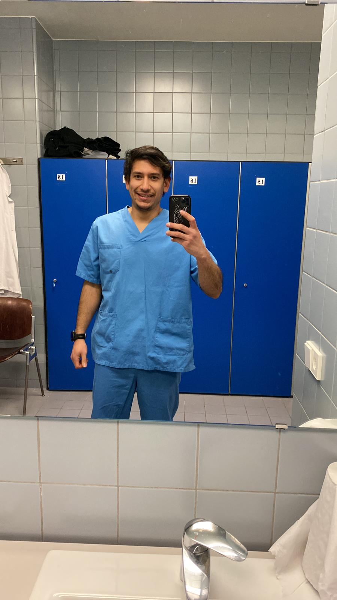

Víctor Varela Vera
Fecha Nacimiento: 15/02/1995
Teléfono: 600 290 828
Correo: vvarela@outlook.es
Formación Académica
- 2025: Máster en Desarrollo Full Stack
- 2015-2018:
Grado Superior en instalaciones electrotécnicas y automatizadas estudiado en CIP Virgen Del Camino, Pamplona.
- 2014-2015:Curso puente para acceder a grado superior
- 2012-2014: Grado Medio en instalaciones de telecomunicaciones estudiado en CIP ETI, Tudela
- 2012-2014: Grado Medio en instalaciones de telecomunicaciones estudiado en CIP ETI, Tudela
- 2007-2012:Educacion secundaria obligatoria estuadiada en IES Alhama, Corella
Formación Complementaria
- Inglés: B1
- Frnacés: A2
- Programación en AWL de automatas S7
- Conocimientos en programas de diseño como AutoCAD
- Manejo de programas informáticos como Word, Excel
Otros
- Conocimientos en HTML, CSS, JavaScript, PHP, MySQL y Java
- Conocimientos en fibra óptica: Tendido, Fusiones
- Carnet de conducir tipo B
Experiencia Laboral
- 2013-2017:Camarero de barra y bandeja en diferentes bares
- 2016 Monitor de Ludoteca en Fitero
- 2012-2013:Organización de eventos en las fiestas de Fitero
- 2014: Prácticas de grado medio en Trenes de Navarra (TRENASA),Castejón
- 2018-2020 Peón especialista en Montajes eléctricos NEBEGO
- 2020-actualidad Oficial de 1º en Consultora Navarra de Telecomunicaciones